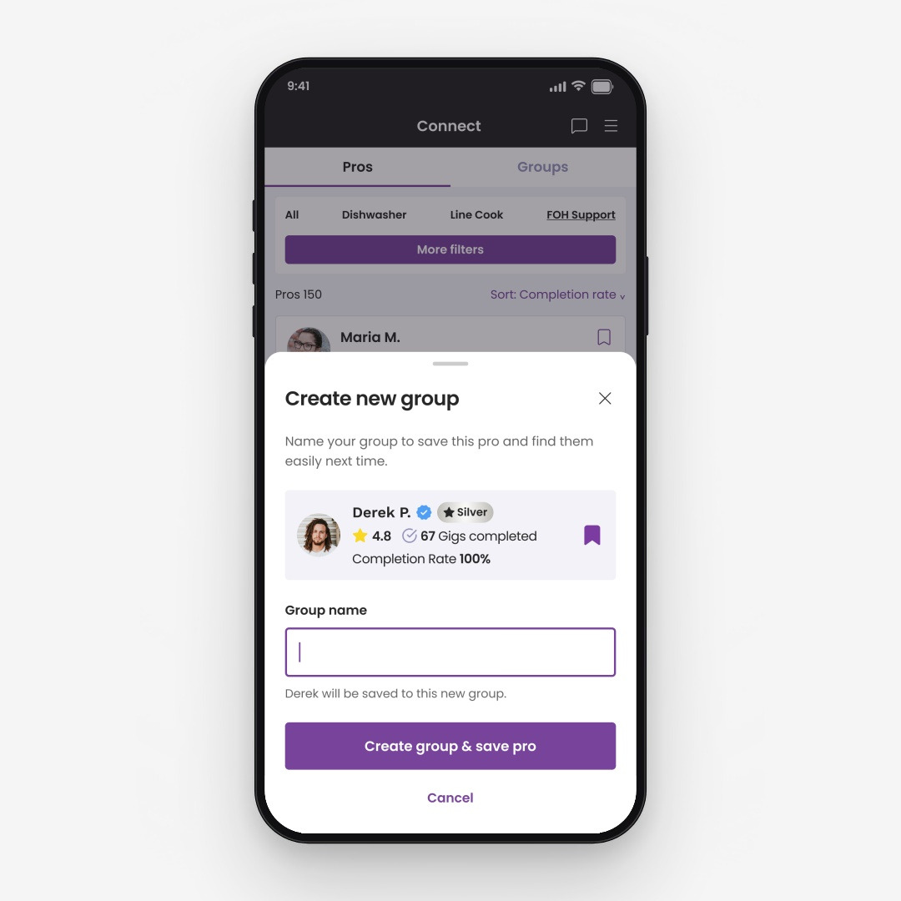

Gigpro/Qwick
Rebuilding trust in a staffing marketplace
From open applications to data-backed matching
- Marketplace
- Platform strategy
- trust & reliability
In 2022, Gigpro, now Qwick, was losing business due to no-shows, late cancellations, and inconsistent Pro quality.
I led strategy and design across qualification, performance, and hiring to rebuild trust and lay the foundation for data-backed matching and platform-led fulfillment.
Results
-
79%
Fewer no-shows
-
28%
Fewer late cancellations
-
13%
of paid gigs from Direct Offers within 2 months
The problem
Nearly half of churned businesses cited concerns about Pro quality.
“The last pro showed up 20 minutes late and then just disappeared in the middle of service.”
In research with churned businesses, 10 of 22 respondents cited insufficient training or professionalism as a reason they stopped using the platform. As the marketplace grew, no-shows, late cancellations, and poor experiences with Pros made businesses less confident in the Pros they were choosing.
My approach
I focused the work around being able to answer the questions that businesses were asking themselves.
| Question | Response |
|---|---|
| Can this Pro do the job? | Profile setup · Orientation and assessment · Skill certificates · Industry certifications |
| Will they show up and do it well? | Ratings by role · Review facets · Medals |
| Will they arrive prepared? | Uniform requirements · Accessories · Location details |
| Who do I want to hire again? | Direct Offers · Preferred Network |
| Who’s the best available fit for this shift? | Recommendations · Automatch · Match |
qualification • 2022–24
Building a trusted path into the marketplace.
Before Gigpro could help businesses make better hiring decisions, it needed to set a standard for being a Pro on the platform.
The call: Raise the bar for eligibility
I made completing onboarding a requirement to apply. New steps captured richer profile data, and orientation and screening educated Pros and helped to set expectations. Until Pros finished them, they could browse gigs but not apply.
Before: Pros needed only a photo and a bio to create a Pro profile.
After: onboarding collected structured inputs that became dedicated, scannable sections which made profiles richer and easier to assess.
W2 workers completed a pre-screen and live interview. Pro Success credentialed skills and managed approvals from the Admin dashboard.
02.visibility • 2023–24
Making performance visible.
Qualification efforts helped to create the signals. This work put it in front of businesses at the point of selection.
The call: Surface meaningful data and organize ratings by role
Updates to business facing Pro profile included not only gig history, work experience, and credentials, but also the ability to filter reviews by role worked.
Skill certificates, industry certifications, and badges helped to visually communicate qualifications at a glance, alongside richer profile data.
A role filter showed a Pro’s rating and gig history for the role being hired, along with new review facets.
03.readiness • 2024–25
Getting Pros ready to work.
Before important shift details lived in a freeform notes field. Pros arrived late because they didn’t know where to park, or were sent home because they weren’t in the proper uniform.
The call: Make arrival details explicit
Field enhancements to the posting flow made shift expectations clearer and helped Pros arrive in the right location in uniform ready to work.
On the business side, I expanded the range of uniform choices and added additional fields for parking and location information.
An updated shift-detail view for Pros surfaced uniform and arrival details more explicitly while reminders reinforced expectations.
04.hiring • 2024–25
Helping businesses rehire proven Pros.
Once a shift ended, businesses had no way to reach Pros they had worked with and wanted to book again.
The call: Enable businesses to build their own networks
Businesses wanted to book Pros that they had success with before. Connect, was a dedicated space for them to see all the past pros they worked with. Here they could create groups and build their talent pipeline.

Allowed businesses to save and create groups from Pros they’ve worked with to build their trusted network of Pro talent.
Saving groups enabled businesses to send direct offers specifically to groups or individual Pros instead of posting to the marketplace.
05.match • 2025–26
Earning the right to match.
By 2025, stronger qualification, performance, and hiring signals made platform-led fulfillment possible. By 2026, Match became the default for new businesses, filling shifts with the best-fit available Pros that businesses could review and remove at any time.
The call: Let trust set the pace
We introduced platform support in 3 phases. Each phase took more of the selection burden off the business.
Recommended Pros was a platform curated shortlist that appeared above the standard applicant pool. Businesses had the choice to send offers to individual pros, send to all, or select from the standard applicant pool. At this phase there was no automatic fulfillment happening.
Automatch was the first time the platform could act when a business hadn’t. If a shift was still short on selections, it prepared offers for matched Pros. Businesses got a reminder before anything went out and could review and remove any Pro they didn’t want contacted.
The platform fills shifts with qualified Pros, and businesses can still review selections, remove someone, or use Direct Offers for a specific person.
Reflection
Trust is a long game.
Businesses wanted Pros they could trust to show up and do the job. At the time, our competitors were doing more to qualify the people on their platforms. We had taken a lighter touch, connecting Pros with businesses and leaving the rest to them. Closing that gap meant looking inward. Who are we as a business, and what do we stand for? What is our standard, and how do we hold ourselves to it? Those are brand questions as much as product ones, and the product had to keep the promise the brand made. I led an audit of the experience from both sides to find our answers, and it set everything else in motion.
No single feature was going to rebuild that trust, so we took it in stages. Qualification set the standard, and visibility helped businesses see it and act on it. Readiness and rehiring tools made the relationship dependable. Plenty of it asked more of people. Pros had to finish onboarding before they could apply, and businesses shared more about each shift and took one more step in every review. That went against the instinct to make everything effortless, and I understood the pushback. I kept making the call anyway, because an experience people can’t trust costs more than a few extra steps.
As businesses grew more confident, the business model began to change, from a marketplace where Pros applied and businesses chose to a platform that filled shifts on their behalf. We introduced it in phases, from Recommendations to Automatch and toward Match, and watched how each performed and was received before the next step. Businesses could always remove a Pro we picked or offer the shift to their own network. That is how automation earned its place.